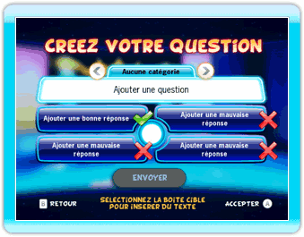

23 |
Créateur |
 |
|
TV Show King 2 offre à tous ses joueurs un système de créateur de questions pour que vous puissiez soumettre vos propres questions et que vous puissiez répondre aux questions d'autres joueurs.
Pour utiliser le Créateur, vous devez vous connecter à la Connexion Wi-Fi Nintendo. Si vous avez besoin d'aide pour vous connecter à la Connexion Wi-Fi Nintendo, visitez le site support.nintendo.com.
 Pour créer une question, vous allez devoir interagir avec différentes parties de l'interface. Placez le curseur sur la boîte de question ou une des quatre boîtes de réponses et appuyez sur le bouton A pour faire apparaître le clavier virtuel à l'écran. Utilisez ce clavier pour entrer vos questions et vos réponses. Sélectionnez la boîte correspondant à la catégorie de votre question. Enfin, une fois que la question que vous venez de créer vous satisfait, placez le curseur sur l'icône "Envoyer" et appuyez sur le bouton A. Et voilà !
Télécharger des questions, c'est simple comme bonjour ! Placez le curseur sur l'icône "Mettre à jour les questions" et appuyez sur le bouton A pour obtenir de nouvelles questions pour votre partie. Pour vous permettre d'avoir toujours suffisamment d'espace dans la mémoire de la console Wii afin de pouvoir recevoir de nouvelles questions, nous remplacerons vos anciennes questions par les nouvelles !
Si vous souhaitez supprimer un pack de questions de votre console Wii, vous devez juste sélectionner l'icône "Supprimer des questions". Toute trace de cette question disparaîtra alors de la console Wii. Vous avez également la possibilité de télécharger de nouveau une question supprimée quand bon vous semble ! |
 |
 |
 |